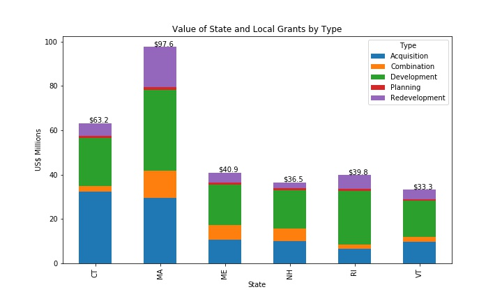

A Local Look at the Land and Water Conservation Fund
LWCF Overview and Current Status
The Land and Water Conservation Fund (LWCF) is a federal program established in the 1960's to provide outdoor recreation opportunities and help protect natural areas, water resources, and cultural heritage sites in the US.
There are two broad categories of projects that the LWCF program supports. Funds are available at the federal level to make land acquisitions, or at the State and local level as matching grants for planning, acquisition, or development projects. From its inception through 2014, LWCF funds have purchased over 2.2 million acres of National Park Service land at the federal level. It has also issued more than 40,000 grants totaling over $4 billion for state and community projects - grant money that is then matched by the local sponsor, bringing the total impact to our communities to over $8 billion.
Protecting and preserving recreational resources has a direct benefit to local economies as well. As noted by National Park Service Director Jonathan Jarvis in the 2012 LWCF Annual Report (the most recent one available):
Direct economic benefits include supporting a variety of local businesses through spending by park visitors, creating jobs and income for residents, and enhancing property values of nearby homes; all of which generate revenue for the communities near the parks. Indirectly, parks can help lower health care costs and the expense of constructing public infrastructure like stormwater management systems. Even better, the land protection provisions of the LWCF ensure that assisted parks will provide these benefits to future generations of Americans.
There's LWCF-protected land and water in all 50 states and almost every county in the US. The map below shows the total value of State and Local Assistance grants by county in communities across the US.
In a recent bipartisan win, the LWCF was permanently re-authorized in March 2019 when S.47 was signed into law. However, like any program, it will fail to deliver continued benefits without proper funding. Congress has the ability to fully fund the LWCF with $900 million from the fees collected on offshore oil and gas drilling leases every year (costing taxpayers nothing), but this has only happened twice in LWCF's history. The 2012 Annual Report notes that there were an estimated $18 billion of unmet needs for LWCF projects. Having proper funding to address the backlog of Federal and State projects is paramount to the continued success of the program.
According to the National Park Service's website, LWCF funds have purchased over 2.2 million acres at the Federal level since its inception, but as of 2014 there remains 2.6 million privately-owned acres within NPS land boundaries. Of those, 1.6 million are identified for acquisition, but "less than 1 percent of that is acquired annually due to funding constraints."
Make sure to contact your duly-elected officials and urge them to support fully-funding the LWCF. This will allow the program to continue maintaining, enhancing, and creating public lands, or providing outdoor recreation opportunities for all Americans.
LWCF Projects in New England
New England is no stranger to the benefits of LWCF grant money - more than $300 million of State and Local Assistance grants have supported projects from 1965-2011. These grants can come in several forms - they cover planning costs that fund a State to develop the Statewide Comprehensive Outdoor Recreation Plan (SCORP), they fund the acquisition of land for outdoor recreation, the development (or redevelopment) of land for an outdoor project, or a combination of these. The chart below breaks down the State and Local Assistance grants by type for the six New England states.

Below are some examples of LWCF projects specific to the New England area.
- New England: Almost $10 million in LWCF grants have helped protect lands within the 36,000-acre Silvio O. Conte National Fish and Wildlife Refuge. The refuge exists to conserve the ecosystems along the Connecticut river watershed, which is the longest in New England, flowing through New Hampshire, Vermont, Massachusetts, and Connecticut
- Connecticut: $2.2 million in LWCF grants helped acquire the 460-acre Bennett's Pond property in 2004 to expand the nearby Wooster Mountain State Park. Recreation in and around the pond includes fishing, hunting, hiking, mountain biking and cross-country skiing.
- Maine: In 2006, $175,000 of LWCF grants supported a $1.2 million project to purchase 2,000 acres along the St. Croix River in Washington County. The goal of the project was to conserve a 500-foot riparian corridor along a pristine stretch of boundary water in the Northeast.
- Maine: $200,000 of LWCF funds contributed to a land purchase in Camden Hills State Park in 2011. The park offers a variety of multi-use outdoor recreation options, including hiking, hunting, mountain-biking, horseback riding, snow-shoeing, camping, and more.
- Massachusetts: Ashburnham and the Commonwealth of Massachusetts used $450,000 in LWCF funds to add to an investment to conserve 460 acres of forest lands along the New Hampshire border. The land provides public access for long-distance hiking, links several other conservation lands, and protects the water quality of the Millers River.
- Massachusetts: $784,000 of LWCF grants supported a 280-acre acquisition by the Commonwealth of Massachusetts (and various other groups) of Mt. Watatic. The land purchase will protect scenic views from the mountain's bald summit, wetlands in the area, and offer hiking, wildlife viewing, hunting, and skiing opportunities.
- New Hampshire: The State of New Hampshire used $343,674 of LWCF grant money to help with its purchase of the Temple Mountain Ski Area in 2007. The land adds to the existing trail system and supports various outdoor recreation activities.
- New Hampshire: $100,000 of LWCF grants contributed to a waterfront park in downtown Tilton at the site of an abandoned flour mill. The 2-acre site was originally restored for public use by an EPA funded cleanup, and now has boat ramps, fishing piers, picnic areas and a main pavilion for public use.
- Rhode Island: Three grants totaling more than $2.3 million funded a series of projects to develop Roger Williams Park, which covers 427 acres and hosts a zoo, a botanical garden, and other cultural sites.
- Rhode Island: In 2007, $1.1 million of LWCF State and Local Assistance grants helped build a new pavilion at Salty Brine State Beach, one of the more popular beaches in the State.
- Vermont: In 2005, $441,500 of LWCF grants helped to cover the cost to renovate Elmore State Park's bathhouse so it can continue providing support for recreational activities in the park.
- Vermont: In 2001, $461,681 of LWCF grant money helped to secure 3,764 acres of the Black Falls Basin along the northern corridor of Vermont’s Long Trail. The acquisition protects a wilderness experience for Long Trail hikers and important wildlife habitat.